| 日付 | 2008年9月27日（土） - 2008年10月5日（日） |
|---|---|
| メンバー | 単独 |
9月末から10月にかけて遅い夏休みをとる。今回は初のヨーロッパとなるスペイン旅行。
本当はGWに行きたかったのだが、航空機チケットが取れなかったので今回の夏休みに延期。
タイに続いて宿の予約はせずに、バックパッカースタイルで行くことにする。
1日目
アムステルダム経由でマドリードに向かう。
飛行機から見える景色は町と畑のみ。
人の手が入っていない自然は全く見当たらない。
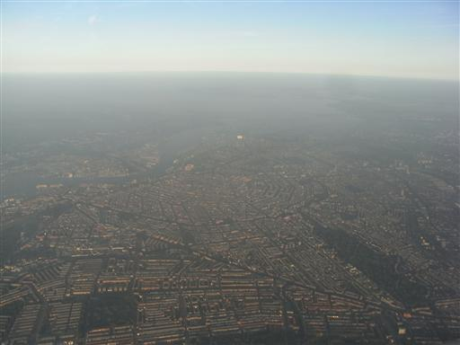
20:30にマドリード着。
空港からホテルまでは地下鉄を利用することにする。
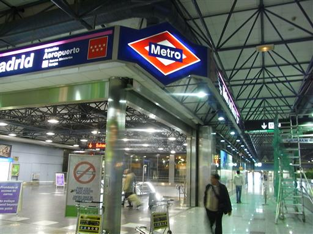
始めて訪れた街で夜の地下鉄に乗るのは少々不安があったが、
比較的乗降客が多いので一安心。
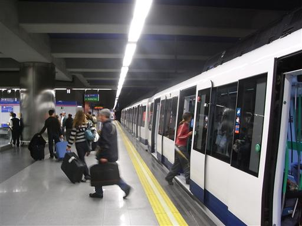
ホテルは地下鉄の駅から歩いて20分程度と少々遠い。
最悪なことに途中から大雨が降ってくる。
ガイドブックにはこの季節はほとんど雨が降らないと書かれていたのだが…
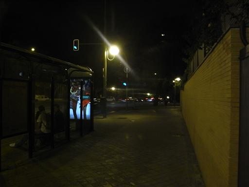
ようやく本日宿泊予定のホテルに到着。
ここだけは旅行前に事前に予約しておいた。
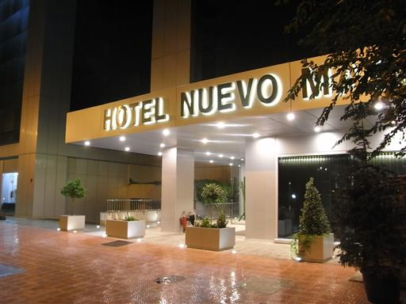
今晩の宿泊場所。可もなく不可もない普通の部屋。
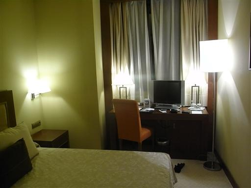
2日目
初日からあわてることはないと思い、7時起床8時出発の予定にする。
朝7時に起きて外を見てびっくり。外は完全に闇に包まれている。
薄ら明るくなってもいない。何度も時計を確認するが朝の7時で間違いない。
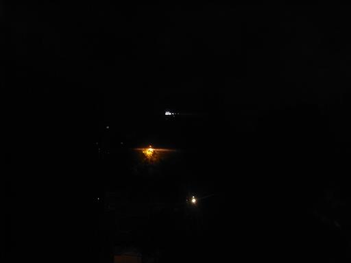
8時半頃、ようやく明るくなってきたので外に出かける。
この国は時間の感覚がかなりずれている。
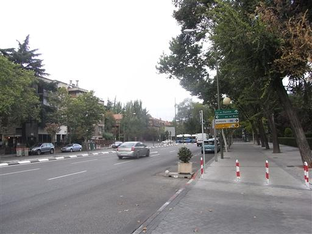
初日からマドリードを離れる予定だったのだが、
スペインで闘牛を見てみたかったので、今日はマドリードに留まることにする。
闘牛は日曜日にしか行われていないようなので、今日を逃せばもう見る機会はない。
当日券が買えるかどうか心配したが、普通に購入できた。
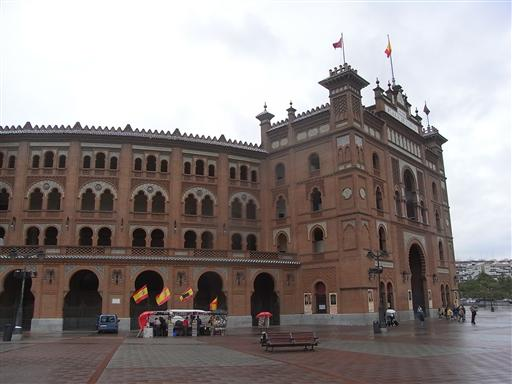
外の気温は14度。半袖だと少し肌寒い。
暑い国だと思っていたが、そうでもないようだ。
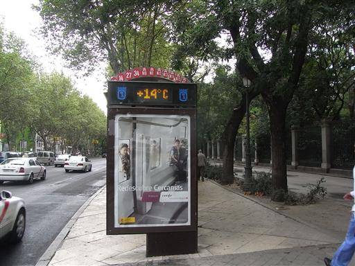
まずはソフィア王妃芸術センターに行ってみることにする。
マドリードといえばプラド美術館が有名だが、中世の絵画が多いプラドに対して
こちらの美術館はピカソ、ダリ、ミロなどの新しい絵画が多い。
有名なピカソのゲルニカはこの美術館に展示されている。
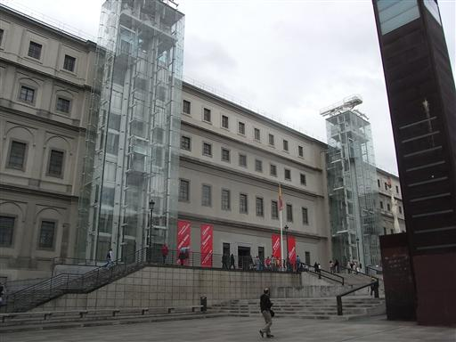
日曜日は入場が無料。入口には少し列ができている。
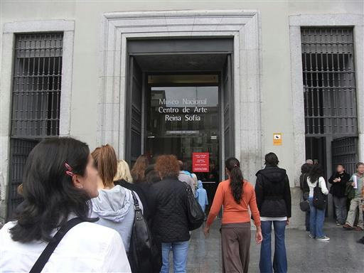
日曜日は多くの施設が閉まっているのでつまらない。
とりあえずマドリードの街をぶらぶらする。
大都会でもこのような街並みが広がっているのはヨーロッパならではだろう。
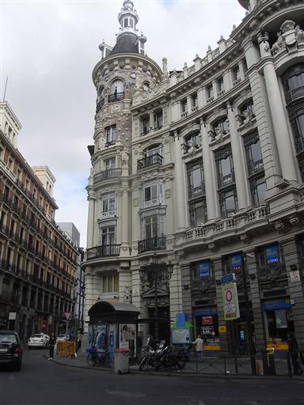
マドリードにある大きな広場、マヨール広場に行ってみることにする。
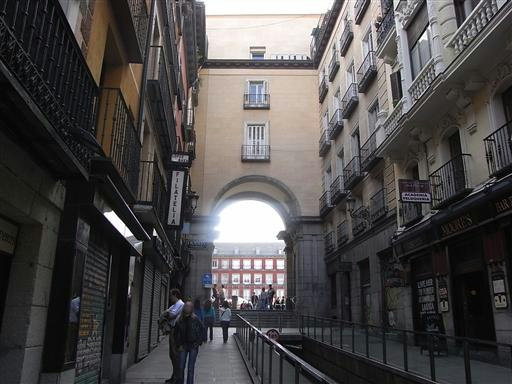
周りを建物に囲まれた長方形の大きな広場。
大勢の人がたむろしている。
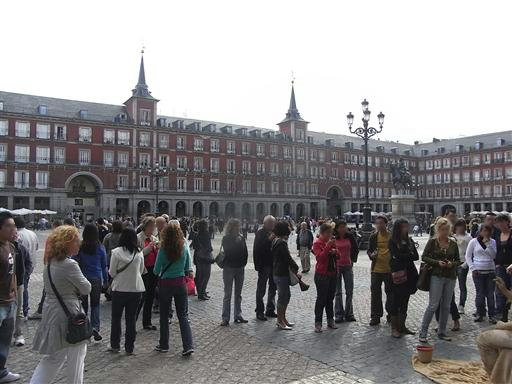
泥人間。こういったパフォーマンスをやっている人もあちこちにいる。
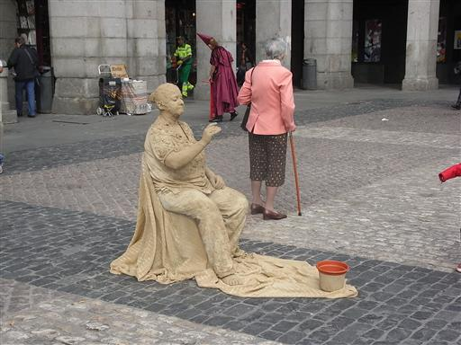
狭い路地には多くのカフェやバル(Bar)がひしめき合っている。
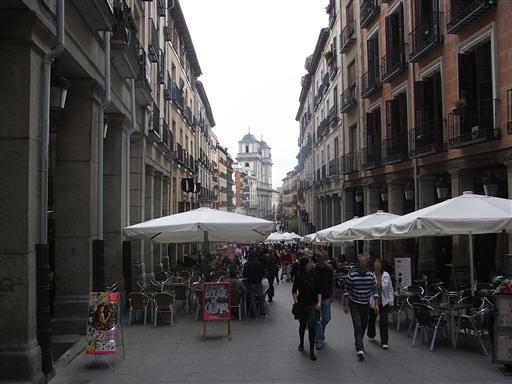
今日の宿をとったり、明日の列車のチケットを手配したりしていると夕方になってしまった。
闘牛の始まる時間なので、闘牛場に向かう。
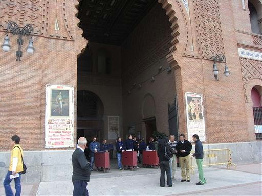
席に着くと、ちょうど始まる時間だった。
客の入りは1階席が半分、2、3階席はガラガラという状態。
最近スペインでは闘牛の人気が落ちているらしい。日本でいう相撲のようなものか？
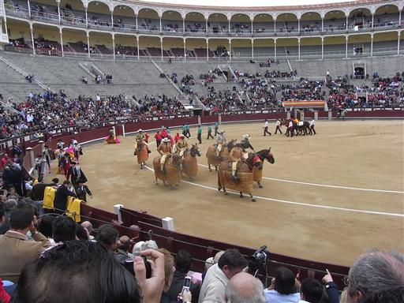
今日の闘牛士3名のあいさつ。本日の主役だ。
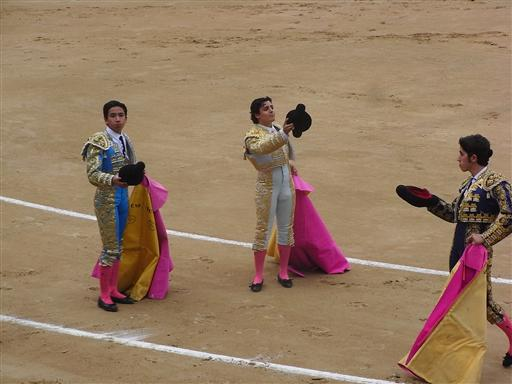
今回選んだ席はソル･イ･ソンブラ。
闘牛ではソル（日向）とソンブラ（日陰）、その中間（ソル･イ･ソンブラ）で値段が大きく異なる。
が、今日の天気では何の関係もない。
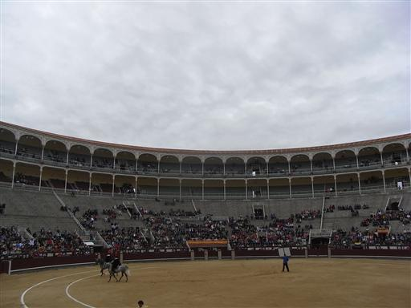
まず、牡牛の入場。見事に鍛えられた牡牛が勢いよく場内に入ってくる。
助手がカポーテ（ピンクのケープ）を使って牡牛をおびき寄せ、会場内を走り回らせる。
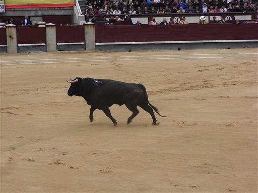
次にピカドール（槍方）が入場。
槍で牡牛を突き刺し、牡牛の動きを鈍らせる。
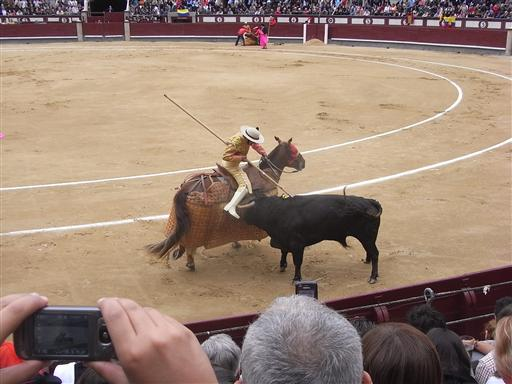
次に銛打ちが牡牛の背中に銛を打ち込む。
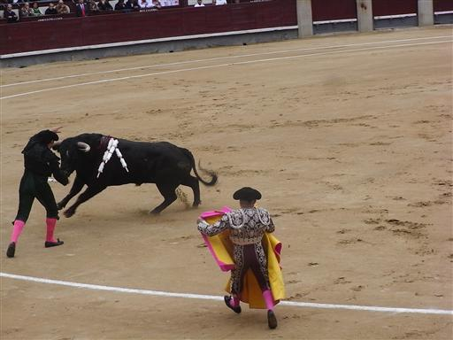
背中に銛が突き刺さった牡牛。少し痛々しい。
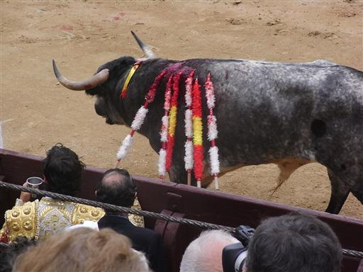
ここで主役の闘牛士が登場する。
ムレータ（赤い布）と剣を持って、牡牛と対峙する。
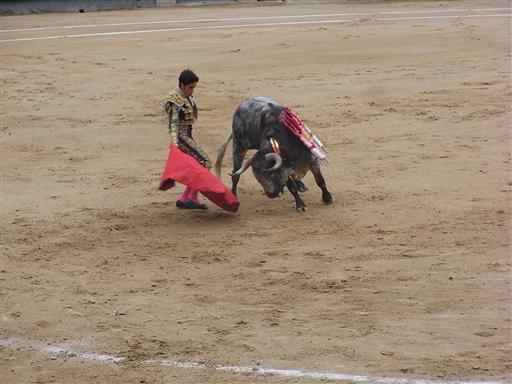
長い剣を突き刺した後、最後の止めをさす。
本当は長い剣を突き刺すだけで止めをさすのが美しい死らしい。
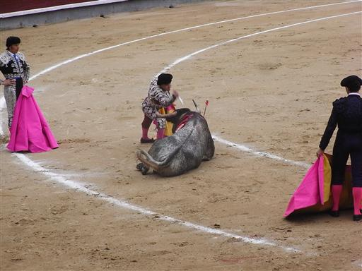
殺された牡牛は、馬によって場外に運ばれていく。
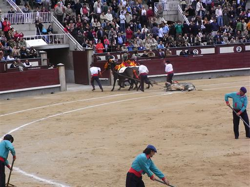
この儀式を、日が暮れるまで3人の闘牛士が順番に2回ずつ行う。
1回の闘牛で牡牛が6体殺されることになる。
途中、ピカドールや闘牛士が牡牛に突き飛ばされるハプニングはあったが、ほぼ同じ手順で儀式は行われる。
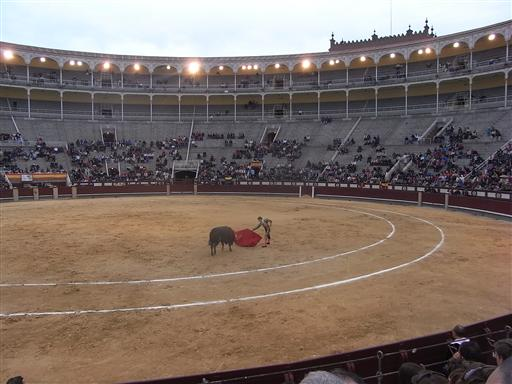
闘牛終了後、帰路に付く人達。
混雑する地下鉄に乗って、本日の宿に向かう。
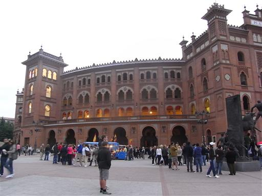
途中で夕食をとり、本日の宿に戻ってくる。
この宿は雑居ビルの中にあり、フロントは2階にある。
入口のドアは閉まっていて、ドア横のブザーを鳴らすと開けてもらえる。
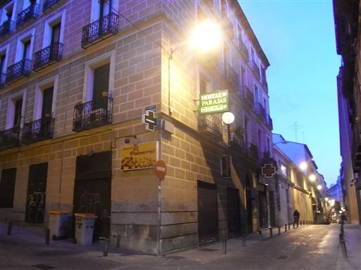